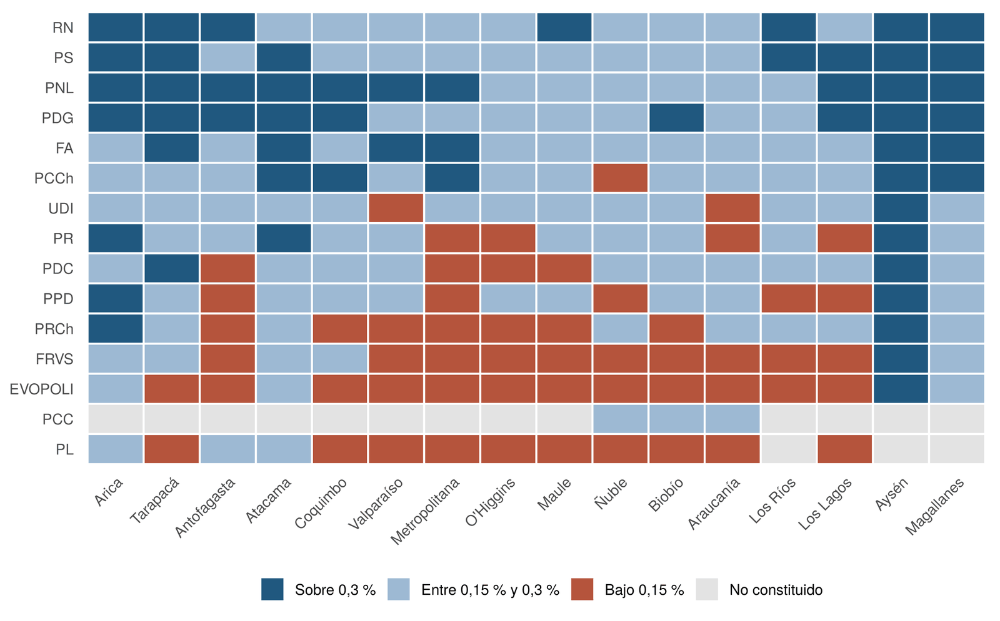
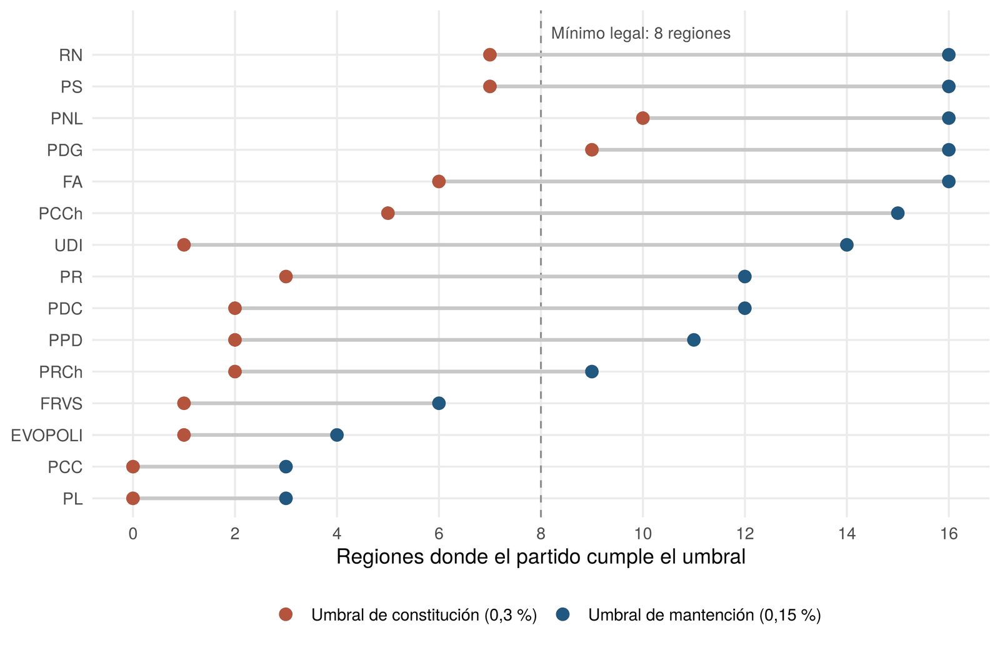
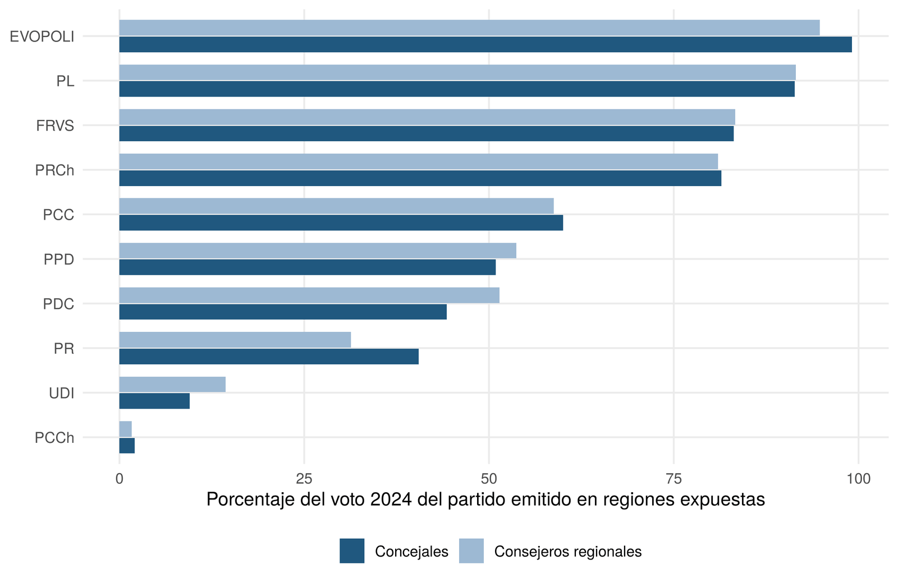
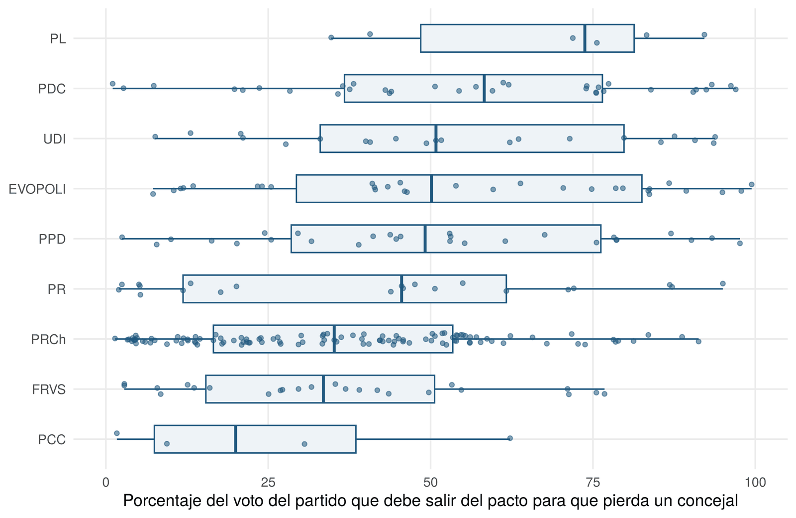

Getting in and staying in: the double membership threshold of the political system reform and the 2028 party supply
In 2026, Congress passed the political system reform (Bill No. 17,640-06), which tightens the conditions for creating and maintaining parties. To register a party in a region, 0.3% of the final electoral roll will be required, instead of 0.25% of those who voted, and every party must be present in at least eight regions. Registered parties, in contrast, only need to keep half of that figure in each region, and they have eighteen months from the publication of the law to reach it.
This working paper assesses, before the law takes effect, how this double-threshold design reshapes the supply of parties ahead of the 2028 regional and municipal elections. It contrasts two readings of the reform, as a tool to reduce fragmentation and as protection for established parties against new competitors. This entry summarises the findings; the full paper develops the theoretical framework, the method and the limitations.
Data and methods
The analysis uses official data from the Electoral Service (SERVEL): each party's members by region as of 30 September 2026, the regions where each party is registered, the final 2025 roll and municipality-level results of the 2024 elections. For the fifteen registered parties, it computes compliance with both thresholds, the share of their 2024 vote cast in regions where they are currently below the threshold and, with a D'Hondt simulation validated against the 2024 winners, what would happen to their pact's seats if their vote were removed from the ballot. All processing is reproducible in R.
Five findings
1. The effective threshold rises by 70%
The move from 0.25% to 0.3% suggests a 20% increase, but the change in denominator amplifies it. The current minimums, set by SERVEL, are calculated on valid votes, which in 2025 were 68.6% of the roll. Calculating the threshold on all registered voters raises the required figure by 70.2%. In the Metropolitan Region, the maintenance threshold rises from 5,097 to 9,121 members.
2. Four parties do not reach eight regions
The Liberal Party, Evópoli, the FRVS and the Christian Party of Chile are below the maintenance threshold (0.15%) in so many regions that they do not reach the legal minimum. The Liberal Party needs 1,672 more members to reach eight regions, Evópoli 745 and the FRVS 383, provided they recruit them in the regions with the smallest gap. The Christian Party of Chile, registered in three regions, must register in five new ones at the 0.3% threshold. Under the current rule, the Liberal Party, Evópoli and the FRVS would keep eight regions or more, so their risk is an effect of the reform.

3. Getting in is much harder than staying in
Under the maintenance threshold, 4 of the 15 registered parties fail; under the registration threshold, 13 would fail. Of the 224 regions where parties are registered, 55 are below the maintenance threshold and 168 below the registration threshold. The reform does not create this asymmetry, because the 50% rule already existed, but it keeps it while raising both thresholds and removing the option of registering in three contiguous regions.

4. Risk depends on size, not concentration
Parties with membership concentrated in a few regions were expected to have more regions below the threshold, but that is not the case. The nationalisation of membership is not significantly correlated with regions below the threshold (ρ = −0.31), while the total number of members explains almost all the variation (ρ = −0.90). The rule penalises a lack of members rather than their concentration, in a system where party members are 2.9% of the roll.
5. The reform also removes large parties from some regions
Under the current rule, the Republican Party would have all sixteen regions above the threshold; under the new one, it has nine, and the other seven accounted for 81% of its 2024 council vote. The PPD, the PDC and the Radical Party have between 40% and 54% of their vote in regions where they are currently below the threshold. For these parties, the cost is not dissolution but the need to recruit members or run candidates under another label in those regions.

The effect on seats
Excluding a party is not neutral for its pact. In the simulation on the 2024 council elections, Evópoli's pact would have lost a seat in 35% of the exposed municipalities where it competed, the FRVS pact in 26% and the Liberal Party's pact in 18%. It is enough for between a third and just over half of the excluded party's vote to leave the pact for the pact to lose the seat. The effect does not depend on the number of councillors elected in the municipality, and of the 282 council seats the pacts would lose, only 35% would go to another list of the same bloc.

Scope
It is an ex ante assessment. The law has not been published, the Constitutional Court could modify its content and the eighteen-month period allows parties to recruit members, so the results describe the situation as of 30 September 2026 rather than a forecast for 2028. The simulation assumes the 2024 supply of candidates would be repeated, except for the excluded party. Data and code are public, so the analysis can be updated with each new membership release from SERVEL.
Version 2.0. Corrects the threshold in force before the reform, which version 1.0 calculated on all voters and without the 500-member minimum, and clarifies the 2028 calendar and the interpretation of the contiguous-regions rule.
How to cite
Bottinelli Baltra, L. (2026). Entrar y permanecer: el doble umbral de afiliación de la reforma al sistema político y la oferta partidaria de 2028 (Documento de trabajo N.° 3, versión 2.0). https://doi.org/10.5281/zenodo.24030166
The R code and processed data for this version are archived in Zenodo: https://doi.org/10.5281/zenodo.24030314.
← Back to the blog